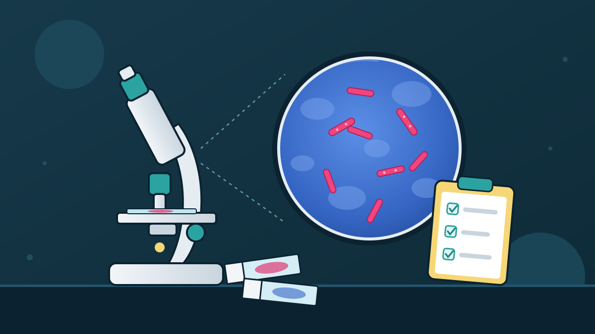
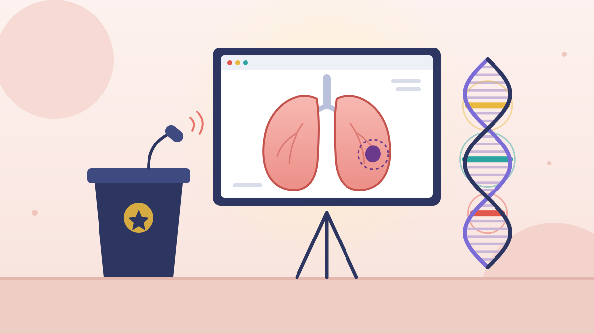

I am a Medical Laboratory Scientist, M.S. Experimental Biomedicine. Passionate about learning new knowledge in the fields of Neuroscience, Technology, and Biohacking.
MALDI-TOF MS for faster diagnosis of bloodstream infections
Undergraduate thesis (Pontificia Universidad Javeriana, 2014), co-authored with Gleidy Trujillo Carreño at Hospital Universitario San Ignacio. We implemented MALDI-TOF MS to identify microorganisms directly from 43 positive blood cultures and compared it with the hospital's conventional methods. 39 of the 43 samples were identified, in under 90 minutes. Read the thesis →
Cruz San Pedro Claver: Honorable Mention (2014)
Pontificia Universidad Javeriana awards the Cruz San Pedro Claver to students who stand out for their human qualities and service to others. In 2014 I received an Honorable Mention, featured in the university magazine Hoy en la Javeriana. During my studies I also volunteered with community mothers in the Pardo Rubio neighborhood of Bogotá and with Misión País Colombia. Read the article →

Quality control of tuberculosis and leprosy smear microscopy
As the Mycobacteria bacteriologist at the Quindío Public Health Laboratory (2017–2019), I carried out quality control and supervision of smear microscopy for Mycobacterium tuberculosis and Mycobacterium leprae for the department's laboratory network, supporting reliable diagnosis in Public Health.

NKX-2, ROR1 and RUNX2 in lung cancer progression
Oral presentation at the 3rd National Meeting of Research Seedbeds – Health Sciences (Tercer Encuentro Nacional de Semilleros de Investigación – Ciencias de la Salud), in Bogotá, August 4–6, 2015, certified by the Fundación Universitaria de Ciencias de la Salud (FUCS). As a member of the Lung Cancer Research Seedbed (Faculty of Medicine, Pontificia Universidad Javeriana, Bogotá, Colombia), I presented with five co-authors how the genes NKX-2, ROR1 and RUNX2 contribute to tumor progression in lung cancer. View certificate →